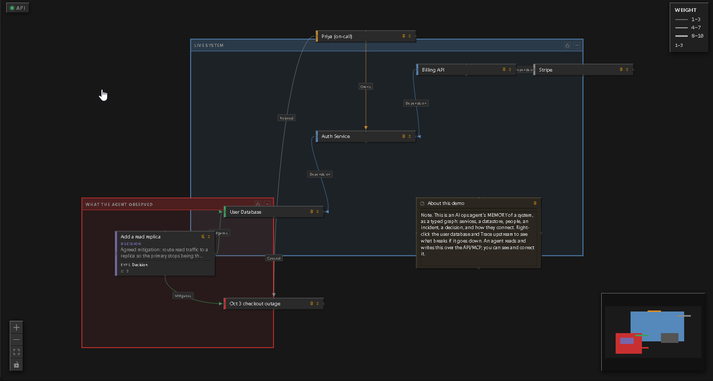
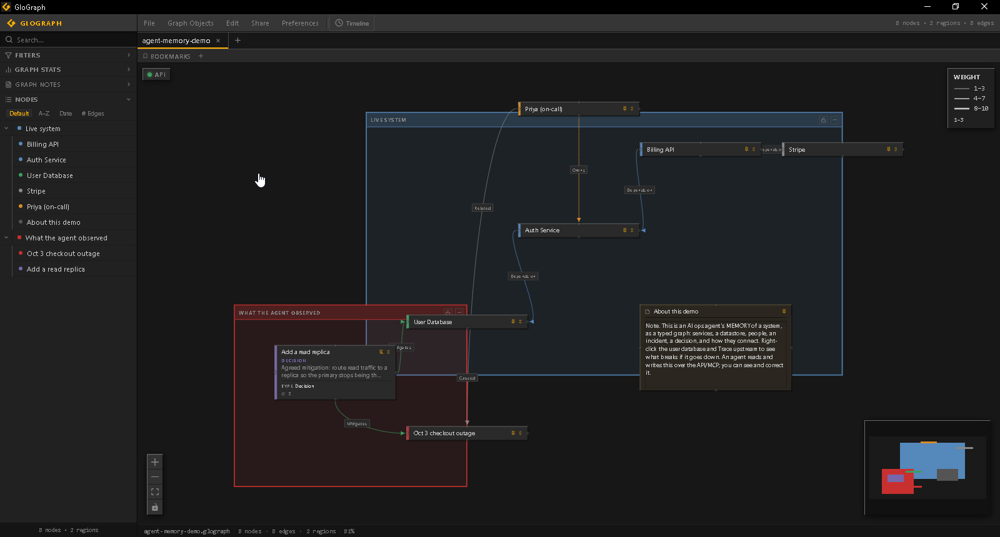
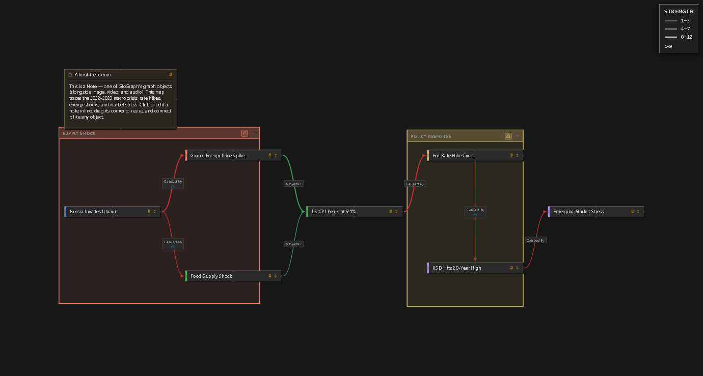
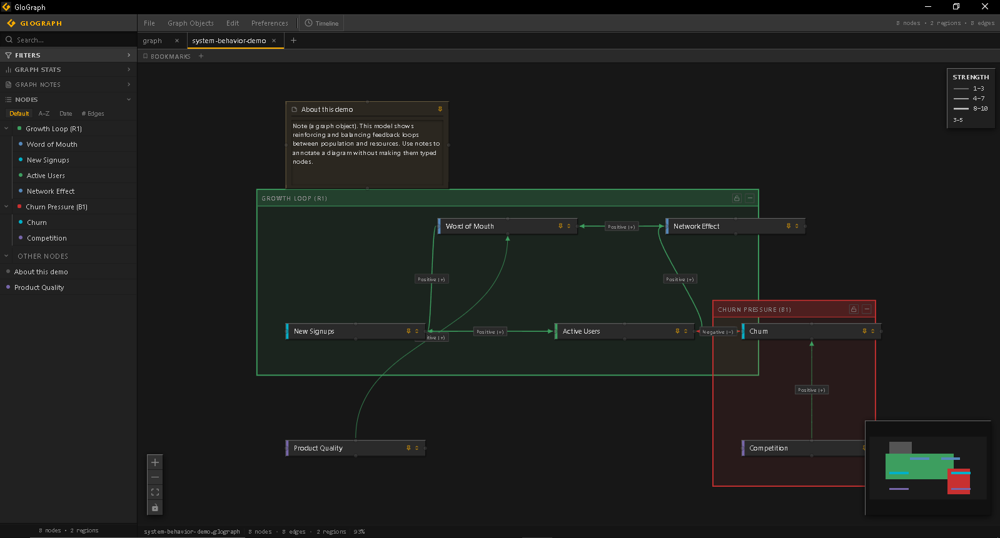
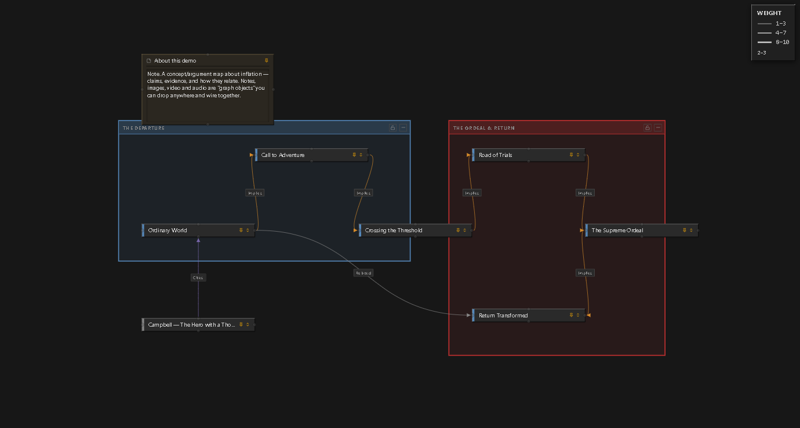
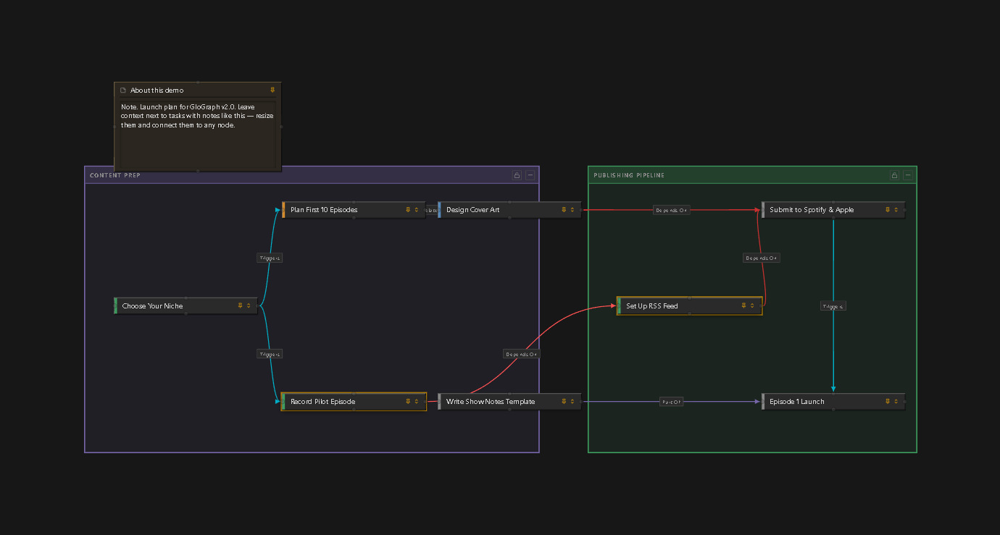

01
Scriptable
An embedded localhost REST API and a zero-dependency Python SDK. Seed and stream graphs, upsert by your own IDs, traverse, and push layouts back, with live canvas sync. Point a script or an AI agent at it.
Map your system as a typed, queryable graph: services, datastores, dependencies, and the decisions behind them. Keep it as a living model you can trace, question, and script, not a diagram that goes stale the day you draw it. Local-first, and yours.
Know what depends on what, and what breaks when it changes.
Free · Windows x64 · beta. Code-signed, though SmartScreen may still warn until the new signature builds reputation. macOS and Linux coming. Or get launch updates.

Most diagram tools draw boxes and lines that rot the moment your system changes. GloGraph stores a small typed database behind the map, so "what depends on this?" and "what breaks if it changes?" are queries, not archaeology.
An embedded localhost REST API and a zero-dependency Python SDK. Seed and stream graphs, upsert by your own IDs, traverse, and push layouts back, with live canvas sync. Point a script or an AI agent at it.
Every project is a portable .glograph file over SQLite on your own disk. No
cloud, no account, no lock-in. Works fully offline, forever.
Right-click any node and trace upstream or downstream: see everything that breaks if it changes, or everything a change depends on. The query a static diagram can't answer.
Dense, keyboard-first, and built for users who return daily. Define your own node and edge fields with presets. The whole tool reshapes around your domain.
Per-preset categories, statuses, and custom parameters drive node colour/badges and edge arrowheads, line style, colour, and width.
Resizable groups that lock so a cluster drags as a unit, or minimize to a header. Crossing edges remap automatically.
One-key dagre layout, top-down or left-right, lock-aware so grouped clusters stay put.
Sort dated events along a timeline and jump straight to any node on the canvas.
Inline image, video, and audio on nodes, plus standalone note/image/video/audio graph objects you can wire into the graph.
PNG, CSV, Mermaid, and DOT/Graphviz. Take your structure anywhere.
Several isolated projects open at once, each its own database, saved to a portable file.
~22 shortcuts: quick-find, quick-connect, auto-wire a selection, routing cycling, focus mode, and undo/redo across everything.
The Python SDK is zero-dependency, standard library only. Enable the API in
Preferences → API, point the client (or an AI agent) at 127.0.0.1:57321,
and seed, stream, query, or relayout a graph programmatically while the canvas updates live.
params={"Domain": "Economic"}Because it's a plain localhost API, anything that can make an HTTP request, a script, a CI job, or an AI agent, can build and update your graph. The API and SDK are free, like the rest of the app.
from glograph import GloGraph
g = GloGraph(token="") # enable the API in Preferences first
# Typed params by name; upsert by your own id (idempotent)
fed = g.nodes.upsert(external_id="FED_JUN22", title="Fed +75bps",
x=100, y=120, params={"Domain": "Economic"})
cpi = g.nodes.upsert(external_id="CPI_JUN22", title="CPI 9.1%",
x=400, y=120, params={"Domain": "Economic"})
g.edges.upsert(external_id="fed->cpi", source_id=fed["id"],
target_id=cpi["id"], params={"Causation": "Caused By"})
# Re-run or stream live: upserts update in place, no duplicates
for row in feed():
g.nodes.upsert(external_id=row["id"], title=row["name"])GloGraph ships example presets as starting points, not the foundation. The data model bends to your domain, from a system's architecture to economics.





Explore these maps in your browser, no install. Or open your own .glograph.
An honest note: GloGraph maps and queries typed relationships. It does not run numerical simulations. If you need to simulate stocks-and-flows dynamics, a dedicated simulation suite is the right tool. GloGraph lives in the gap between cloud-hosted mapping tools and heavy desktop simulation.
GloGraph is in beta. Here's what ships in the app right now, and what's coming next.
The full editor, free while in beta: typed graphs, regions, auto-layout, impact trace, and
your data in portable .glograph files on your own disk. No cloud, no account.
Windows x64 · beta installer (.exe) · free
The installer is code-signed (SSL.com certificate), but because the signature is new, Windows SmartScreen may still show a "not commonly downloaded" warning — click More info → Run anyway; this fades as more people install. macOS and Linux builds are coming; meanwhile try the live demo in any browser.
Product updates, new builds (including macOS/Linux), and the build-in-public devlog. No spam; unsubscribe any time.
Only GloGraph updates. Unsubscribe anytime. Privacy.
Yes — completely free, with full access to every feature. No tiers, no license keys, no accounts, no node or project limits. That includes the HTTP API + Python SDK and clean, unwatermarked exports. Your data stays in local .glograph files on your own disk.
The installer is code-signed with an SSL.com certificate, but the signature is new, so SmartScreen may still show a "not commonly downloaded" warning until it builds reputation. Click More info → Run anyway; this fades as more people install.
GloGraph is a native desktop app (Tauri) built for Windows, macOS, and Linux. The Windows build is available to download now; macOS and Linux builds are coming. Or use the live demo in any browser.
Completely. Projects are plain .glograph files (JSON over SQLite) on your own disk. No cloud, no account, works fully offline. Export to PNG, CSV, Mermaid, or DOT any time.
No, and we won't pretend otherwise. GloGraph maps and queries typed relationships qualitatively. For numerical stocks-and-flows simulation, use a dedicated simulation suite.
No. There's nothing to activate and no account to create — download it and everything is unlocked. The app runs fully offline; no phone-home is required.